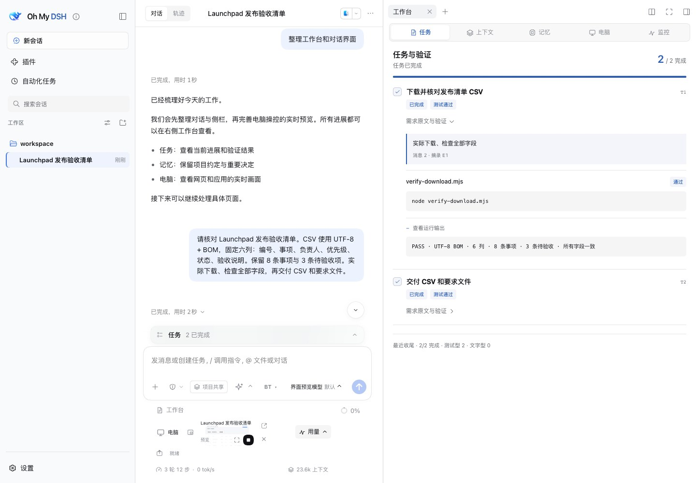
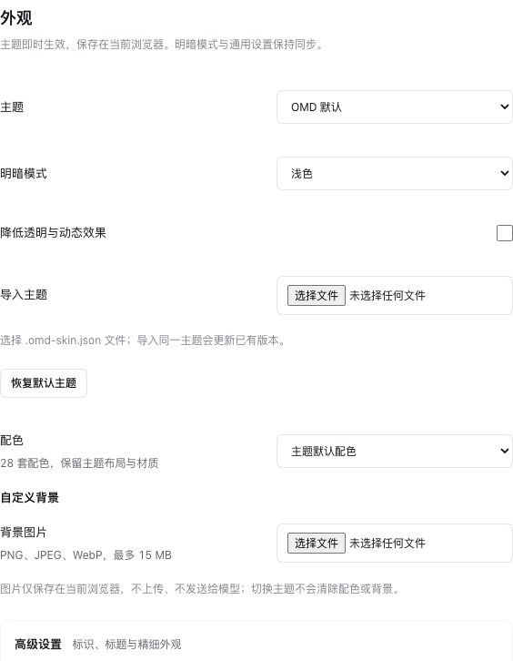
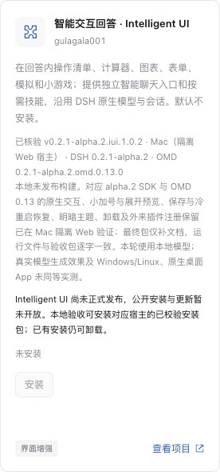

Understand
Bring the goal, requirements, and current project context into the task.
An open-source DeepSeek Harness plugin
Context and memory, computer use, tasks and evidence in native conversations.
Keep your models. Choose the themes and plugins that fit your work.
Public releases: OMD 0.10.0 · DSH alpha.1 / rc.2 · New features are documented as unpublished candidates
From conversation to delivery.
Open image ↗01 / CONTEXT & MEMORY
Summaries keep the current task moving. Original messages and attachments remain available when you need exact details.
Keep owners, priorities, and pending items. Export a six-column CSV with UTF-8 + BOM. The original message provides the acceptance criteria.

The active model context window remains finite. Read the usage guide ↗
02 / OPENCU
In the retained historical OMD 0.10 example, the assistant opens the checklist, filters pending items, and verifies the downloaded file. Browser and desktop actions stay within the native conversation; the reconstruction and new OpenCU have not been accepted.
Computer Use guide ↗Reference @Browser, a connected @Chrome, or an application to bring the target into your task.
Follow the live view and action history. Stop, take over manually, and resume assistant control.
Annotate a region or element, and preview temporary font and color changes for precise feedback.
03 / SYSTEM PROMPTS
Execution guidance draws on Codex and Claude Code structures, adapted to the tools, permissions, and modes actually available in DSH.
Adaptation and sources (Chinese) ↗Bring the goal, requirements, and current project context into the task.
Use available native tools and permissions, with instructions suited to the active mode.
Connect deliverables and actual execution results to the original requirements.
04 / MAKE IT YOURS
Four native themes plus the OMD default, with light and dark layouts for conversations, navigation, settings, and the workbench.
APPEARANCE
Choose themes, 28 color palettes, and backgrounds independently. Adjust typography, surfaces, section colors, names, and logos.
Appearance settings (Chinese) ↗
Themes, palettes, and details ↗05 / WORK TOOLS
Focused tools for requirements, deeper work, and a clear finish.
Requirements, tasks, and evidence together.
Session reminders track unfinished tasks. Optional verification reminders help check the result.
Deeper workflows for complex work.
Pro supports implementation and iteration. Ultracode adds completeness checks and adversarial review. Both use the highest supported reasoning level.
Work modes ↗Turn ideas into clear requirements.
Refine wording, structure a request, or plan steps. Keep the original and revisions, with undo and further edits.
Usage guide ↗Also includes CodeGraph for code relationships and OMD-PTC for composing tool calls. Explore the tools ↗
06 / PLUGIN ECOSYSTEM
Recommended plugins show their purpose, version, and verification status. Compatibility depends on the actual host and build; the catalog is not a guarantee for every plugin.
Suggest a repository and describe what you need.
Submit a Plugin ↗Plugin submission guide (Chinese) ↗
Automatic updates are off by default.
INSTALL
Public packages: OMD 0.10.0 for DSH 0.2.1-alpha.1 and 0.2.0-rc.2. Install by the complete version pair.
Source candidate: 0.2.1-alpha.2.omd.0.17.0, unpublished. This reconstruction restores non-CU features and retains the fixed OpenCU 1.3.0 distribution from OMD 0.10. Candidate build guide ↗
For the DSH 0.2.0-rc.2 desktop app, download the matching plugin package and install into your existing profile. Read the fixed release guide and permission settings first.
Download rc.2 plugin package ↗
Fixed desktop guide (Chinese) ↗
DSH 0.2.1-alpha.1 / OMD 0.10.0. Public packages exclude later candidate features. Requires Node.js ≥22.19 and Git; source builds also require pnpm 11.23.0. Use PowerShell 7 on Windows.
Download alpha.1 plugin package ↗
npx --yes @deepseek-ai/dsh@0.2.1-alpha.1 plugin --profile web add https://github.com/gulagala001/oh-my-dsh/releases/download/v0.2.1-alpha.1.omd.0.10.0/trisoul_x-0.2.1-alpha.1.omd.0.10.0.tgz
npx --yes @deepseek-ai/dsh@0.2.1-alpha.1 --profile webOpen the login link printed at startup. Create a conversation and select Oh My DSH. Keep the existing profile, data directory, and port when upgrading.
Oh My DSH is a DeepSeek Harness plugin. It uses the host's models, conversations, native tool loop, and skills.
Archives, summaries, and on-demand recall extend the task history. The current model window remains finite. Original messages and attachments are retained for exact reference.
Keep your existing model configuration. Native tool calling is required; screenshot understanding also requires image input. The plugin includes no model account or branded subscription.
Support depends on the feature, host version, operating system, and permissions. Native desktop capture has additional system requirements. See system dependencies and permission requirements in the usage guide.
Installation makes Oh My DSH the default Agent preset, enables full file and command access, and disables execution approval. Explicit profile overrides take precedence. Back up your configuration and data first.